Управление запасами формирует заказ поставщику на основе статистики по выданным СИЗ. Данная обработка не учитывает установленные нормы, а анализирует выданную номенклатуру за указанный период.
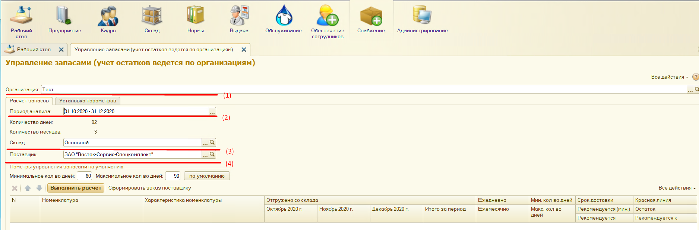
рис.1
После установки параметров нужно выполнить расчет (рис. 2).
Таблица заполняется по выданной номенклатуре за указанный период (п. (2) на рис.1).
В таблице можно увидеть выданную номенклатуру по месяцам и итоговое значение по выданной номенклатуре. Исходя из этих данных, рассчитывается ежемесячная и ежедневная потребность (рис. 2)
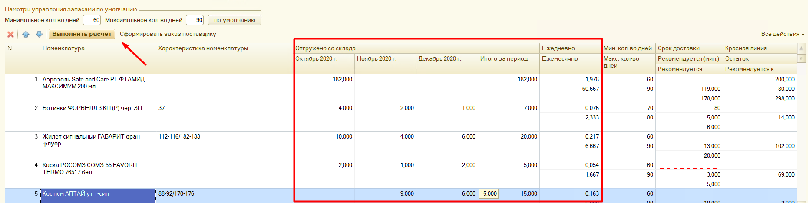
рис.2
По умолчанию запасы рассчитываются на 2-3 месяца. Для изменения периода следует изменить параметры управления запасами (рис. 3). При этом сначала надо изменить максимальное количество дней, а затем минимальное. Кнопка «по умолчанию» установит значения 60 и 90 дней.
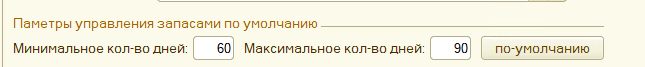
рис.3
Так же для выбранной номенклатуры можно установить свой период, на который должен быть сформирован запас. Для этого на вкладке «Установка параметров» нужно изменить параметры (рис. 4), выбрать номенклатуру, для которой вносятся изменения (при зажатой клавише Ctrl можно выбрать несколько позиций) и нажать кнопку «установить параметры».
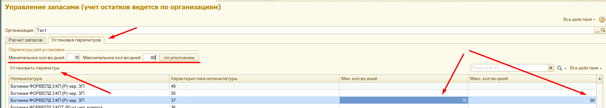
рис.4
Если у номенклатуры длительный срок доставки, то эту информацию можно вывести в отчет в графу «Сроки доставки» (рис. 5). Эта информация справочная и не влияет на расчет, но позволяет сориентироваться в периоде, на который должен быть создан запас данной номенклатуры.
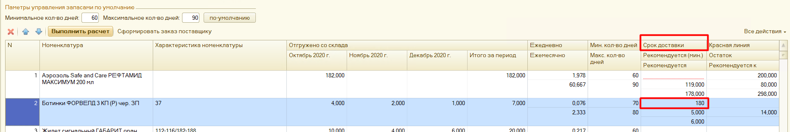
рис.5
Добавить сроки доставки можно в карточке номенклатуры, перейдя на вкладку «Сроки доставки» и нажав кнопку «Создать». В открывшемся окне (рис. 6) заполняются:
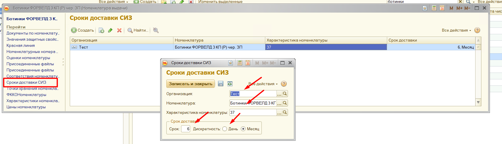
рис.6
Так же сроки доставки можно загрузить, воспользовавшись загрузчиком информации.
Если у номенклатуры на складе должен быть не снижаемый остаток, обработка «Управление запасами» это учитывает. В отчете информация о неснижаемом остатке выводиться в графе «Красная линия» (рис. 7). Для заказа поставщику количество рассчитывается так: Рекомендуется – Остаток + Красная линия.
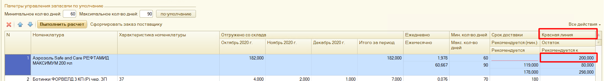
рис.7
Заполнить неснижаемый остаток можно в карточке номенклатуры, перейдя на вкладку «Красная линия» и нажав кнопку «Создать». В открывшемся окне (рис. 8) заполняются:
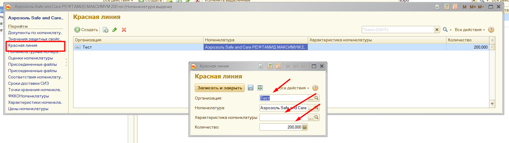
рис.8
Так же красную линию можно загрузить, воспользовавшись загрузчиком информации.
После выполнения расчета в графе «Рекомендуется к заказу» будет отражено количество номенклатуры для заказа поставщику (рис. 9). Это количество может быть отредактировано вручную.
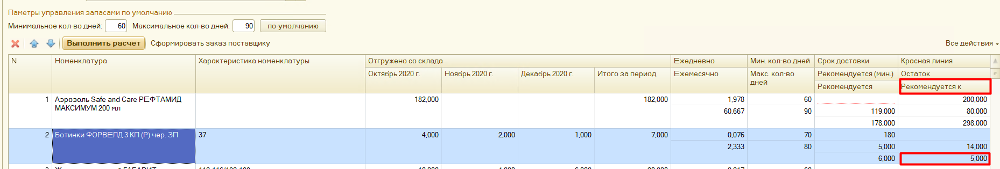
рис.9
Кнопка «Сформировать заказ поставщику» (рис. 10) формирует заказ. В него попадает номенклатура, графа «Рекомендуется к заказу» у которой заполнена (рис. 11).
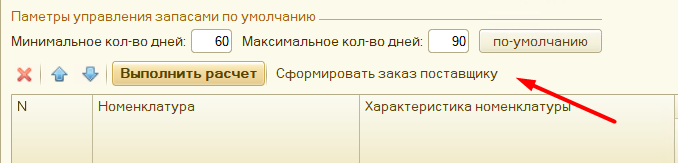
рис.10
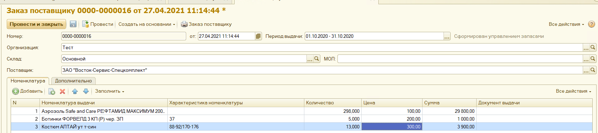
рис.11